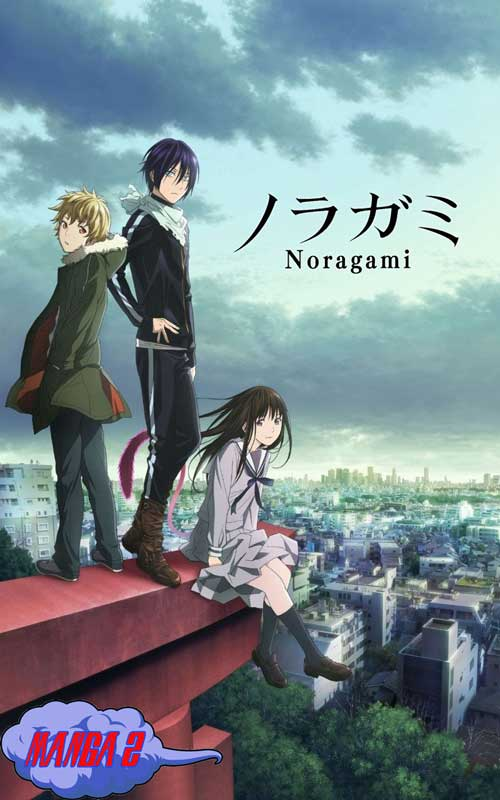

NORAGAMI
GENERO: Accion, Aventura, Shonen
ARGUMENTO
Yato es un dios menor que sueña con tener una gran cantidad de seguidores que lo adoren y recen plegarias por él. Desafortunadamente, su sueño está lejos de hacerse realidad, debido a que no tiene ni siquiera un solo santuario dedicado a su persona. Para empeorar las cosas, la única socia que tenía para ayudar a resolver los problemas de la gente acaba de renunciar. Su divina suerte sólo podría cambiar cuando conoció a Hiyori Iki, una estudiante de secundaria. Tras verse involucrada en un accidente, Hiyori se convierte en una han'yō o semi-fantasma. Metida en un lío bastante grande, la joven decide quedarse con Yato hasta que consiga recuperar su antiguo estado como humana.